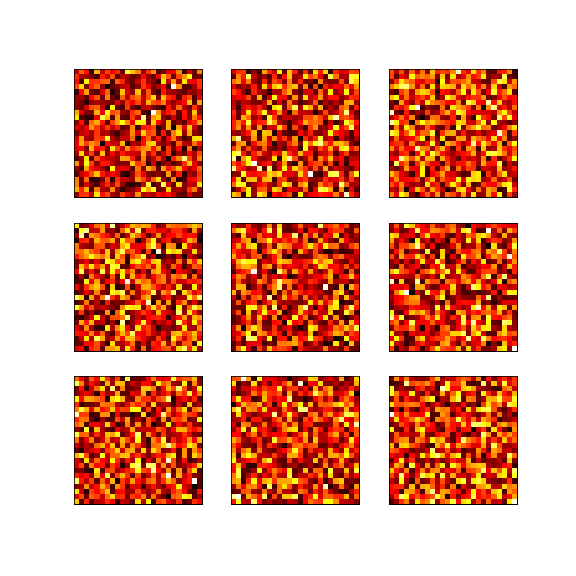

Compactness#
- class hypercoil.loss.cmass.Compactness(coor, nu=1, norm=2, floor=0, radius=None, reduction=None, name=None)#
Compactness score for a coordinate/weight pair.
Compactness
The compactness is defined as
\(\mathbf{1}^\intercal\left(A \circ \left\|C - \frac{AC}{A\mathbf{1}} \right\|_{cols} \right)\mathbf{1}\)
Given a coordinate set \(C\) for the columns of a weight \(A\), the compactness measures the weighted average norm of the displacement of each of the weight’s entries from its row’s centre of mass. (The centre of mass is expressed above as \(\frac{C \circ A}{\mathbf{1}^\intercal A}\)).
In this simulation, the compactness loss is applied with a multi-logit domain mapper and without any other losses or regularisations. The weights collapse to compact but unstructured regions of the field.
Penalising this quantity can promote more compact rows (i.e., concentrate the weight in each row over columns corresponding to coordinates close to the row’s spatial centre of mass).
Warning
This loss can have a large memory footprint, because it requires computing an intermediate tensor with dimensions equal to the number of rows in the weight, multiplied by the number of columns in the weight, multiplied by the dimension of the coordinate space.
- Parameters
- coortensor
Coordinates tensor. Each column of the coordinates tensor should determine the coordinates associated to the corresponding column of the input tensor during the forward pass. The number of rows accordingly corresponds to the dimension of the coordinate space.
- nufloat (default 1)
Loss function weight multiplier.
- normfloat (default 2)
Designation for the p-norm used to operationalise the dispersion of a weight around its centre of mass.
- floorfloat (default 0)
Maximum unpenalised distance from the centre of mass. If this is a nonzero value d, then weights within a norm ball of radius d receive no penalty, and the penalty is instead applied in proportion to distance from this norm ball.
- radiusnonnegative float or None (default None)
If this is a nonnegative float, then the distances are computed as a spherical geodesic instead of a p-norm. In this case, the centre of mass is operationalised as the Euclidean centre of mass, projected onto the surface of a sphere of the specified radius. The coordinate system must be three-dimensional, and each coordinate should then correspond to a point on the surface of the sphere of the specified radius.
- reductioncallable (default
torch.mean) Map from a tensor of arbitrary dimension to a scalar. The output of the compactness loss is passed into
reductionto return a scalar.- namestr or None (default None)
Identifying string for the instantiation of the loss object.
Methods Documentation
- forward(*args, **kwargs)#
Defines the computation performed at every call.
Should be overridden by all subclasses.
Note
Although the recipe for forward pass needs to be defined within this function, one should call the
Moduleinstance afterwards instead of this since the former takes care of running the registered hooks while the latter silently ignores them.
- register_sentry(sentry)#
- register_action(action)#
{kind=link}